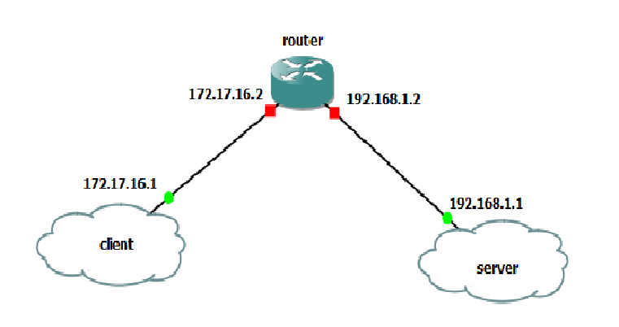
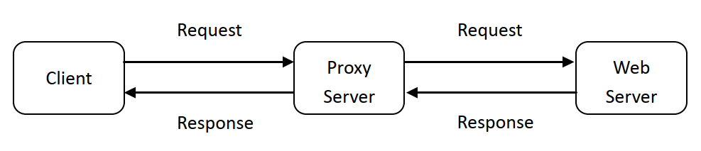

Project 1:
Goal: The goal is to establish a connection between the client and server using socket programming in the GNS3 environment and to become familiar with the WireShark operation. Additionally, understanding protocols such as HTTP, TCP, UDP, and SMTP is another objective of this project.Problem Definition: Implement the following topology in the GNS3 environment.
Then implement the following topologies:
1)Client & Server Communication
2)web server : (i)A socket should be created for connecting to the client. (ii) Receive an HTTP request through this connection. (iii) The request should be analyzed by the server. (iv) The requested file should be retrieved from the server. Create an HTTP response that contains the requested file and a header line. (v) Finally, the response should be sent to the requesting browser through a TCP connection. If the requested file is not available on the server, then the server should return the message '404 Not Found.' (vi)"
3) UDP Pinger: Write a program in Python in such a way that the client sends ten 'ping' messages to the server via a UDP connection and receives the response from the server. For each response received by the client, determine and print the Round Trip Time (RRT) value. 
HERE you can see the source code of the project and results.
Project 2:
The aim of this project was to learn how web proxy servers work and one of their basic functionalities – caching. The task is to develop a small web proxy server which is able to cache web pages. It is a very simple proxy server which only understands simple GET-requests, but is able to handle all kinds of objects - not just HTML pages, but also images.
HERE you can see the source code of the project and results.
Project 3:
In this project, I learned to implement a simplified FTP scheme based on the Go-back-N automatic repeat request (ARQ) algorithm and carry out a number of experiments to evaluate its performance. This project aims at helping you develop a good understanding of transport reliable data transfer (rdt) protocols and build a number of skills related to writing transport layer services, including:- encapsulating application data into transport layer segments by including transport headers,
- buffering and managing data received from, or to be delivered to, the application
- managing the window size at the sender
- computing checksums
- using the UDP socket interface
HERE you can see the source code of the project and results.